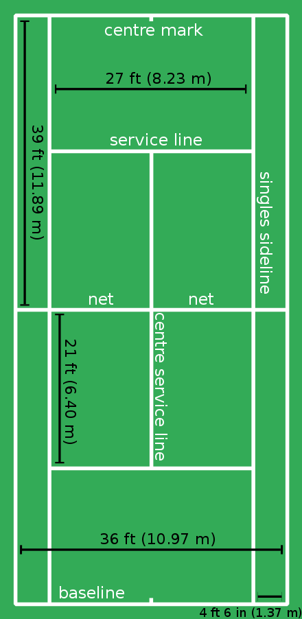

Tennis is a racquet sport that may be played solo (singles) or in 2 teams of two players per (doubles). With a tennis racquet linked by string, each player smashes a hollow rubber ball coated in felt over or over a net into the opponent's court. The purpose of the game is to move the ball such that the competitor is unable to return it. The player who is unable to give it back in a legal way is not awarded a point, but the opposing player is.
Tennis is a sport that takes place on a rectangular, flat surface. For singles matches, the court is 78 feet (23.77 meters) long and 27 feet (8.2 meters) wide; for doubles matches, it is 36 feet (11 meters). In order for players to reach overrun balls, there needs to be more open space surrounding the court. A net runs the length of the court, parallel to the baselines, and divides it into two equal halves. It is supported by a rope or metal cable with a diameter of no more than 0.8 cm (13.3 in). At the posts, the net is 3 feet 6 inches (1.07 m) high, while in the center, it is 3 feet (0.91 m) high.The net posts for a doubles net are 3 feet (0.91 m) outside the doubles court on each side, or 3 feet (0.91 m) outside the singles court on each side for a singles net.
Tennis is a flat, rectangular sport played on a rectangular court. The court is 78 feet long (23.77 meters) and 27 feet wide (8.2 meters) for singles matches and 36 feet long (23.77 meters) and broad for doubles events (11 meters). There has to be more free area around the court for athletes to reach overrun balls. The court is divided into two equal half by a net that travels the length of the court, parallel to the baselines. A rope or steel cable with a thickness of little more than 0.8 cm supports it (13.3 in). The net is 3 feet 6 inches (1.07 m) high at the posts and 3 feet (0.91 m) high in the center. The posts that make up a doubles net.
A game consists of a set of points that are all scored by the same player. The game is won by the first person to score at least four points in total and at least two points more than the opponent. The running score for each game is presented in a tennis-specific manner, with scores ranging from 0 to 3 points being represented to as "love," "15," "30," and "40." The score is labeled "deuce" rather than "40–40" if each player has scored at least three points and their scores are equal at 40. The game score is "advantage" for the player in the lead if each side has managed to score three points and one player has one point more than his opponent.
A set is a collection of games in which service alternates between them and terminates when the overall number of matches won meets the specified criteria. In order to win a set, a player must win at least six games and two games more than his opponent. If either a single player has won six games and the opposition has won five, an extra game is played. You'll win this set 7–5 if the guy in the front of you wins this game. If the leading player actually wins (tying the set 6–6), a tiebreak is played. A tiebreak, which has its own set of regulations, lets one player to win one more game, and therefore the set, for a total score of 7–6.To win a tiebreaker game, you must gain at least seven points while outperforming your opposition by at least two points.
For a right-handed player, the forehand is a stroke that begins on the right side of the body, traverses across the body when contact is made with the ball, and finishes on the left side of the body. A number of grips may be used to perform the forehand, and their prevalence has evolved throughout time. The most significant are the continental, eastern, semi-western, and western. Bill Johnston, a frail little player from the 1920s, was widely considered as possessing the finest forehand ever, a shot he struck shoulder-high with a western grip.
For right-handed players, the backhand is a stroke that starts on the left side of the body, goes all across body when the ball gets in contact, and finishes on the right side of the body. Because it can be executed either with one or both hands, it is hard to master than the forehand. For the bulk of the twentieth century, the backhand was executed with one hand, either using an eastern or a continental grip.Vivian McGrath and John Bromwich of Australia were the first notable players to use two hands in the 1930s, although they were anomalies. The two-handed grip was popularized in the 1970s by Björn Borg, Chris Evert, Jimmy Connors, and subsequently Mats Wilander and Marat Safin, and is currently used by a large number of the world's greatest players, including Novak Djokovic, Rafael Nadal, and Serena Williams.
A volley is a stroke that is returned to the opposition while the ball is still in mid-air. To hit the ball into an open section of the opponent's court, it is often made using a stiff-wristed punching action. The half volley is made by striking the ball on the rise shortly after it has rebounded, also in the similar area of the net, with the racket close to the ground. The player smashes a swooping volley out of air as he approaches the net. It's an attacking stroke that returns the ball to the opponent's court faster than a standard volley, allowing the opponent to prepare less.
{kind=link}